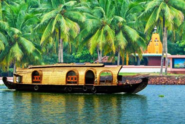
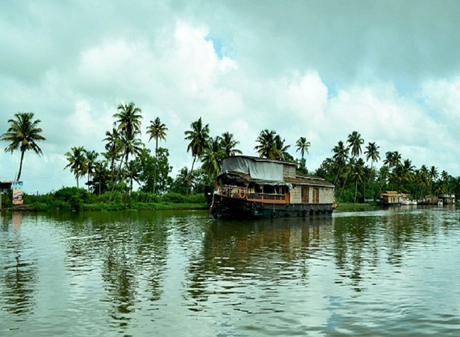
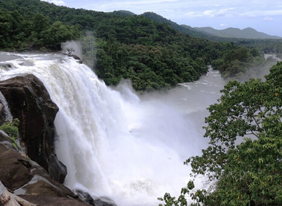
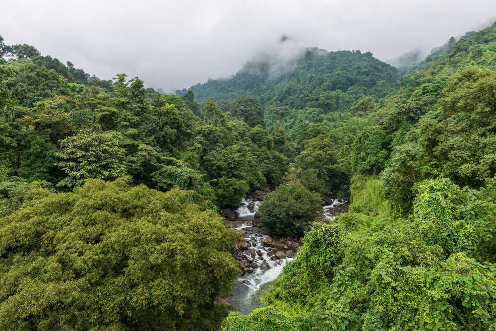

KOZHIKODE
Kozhikode is a coastal city in the south Indian state of Kerala. It was a significant spice trade center and is close to Kappad Beach, where Portuguese explorer Vasco da Gama landed in 1498. The central Kozhikode Beach, overlooked by an old lighthouse, is a popular spot for watching the sunset. Inland, tree-lined Mananchira Square, with its musical fountain, surrounds the massive Mananchira Tank, an artificial pond.



BACKWATERS IN KOZHIKODU
Located on the northern side of the scenic state of Kerala, Kozhikode has always been a popular destination for its backwaters. These backwaters are a distinctive feature of this area and have been generously blessed with abundant natural beauty, dense greenery and exotic flora and fauna. The palm-fringed rivulets, lakes and canals of Kozhikode are decked with engaging beauty. The calm of these undisturbed waters is contagious and instils within you a feeling of tranquil peace and serenit.Among all the other backwaters in Kerala, Kozhikode one is perhaps the most laid-back one. Simple lifestyle of the people of Calicut will win your heart over. The delicious seafood and the rhythm of the backwaters is something similar to therapy. The backwaters of Kozhikode are very simple and beautiful, and it deserves a visit.
THUSHAGIRI WATERFALS
Lying in the Western Ghats of Kozhikode district in Kerala, Thusharagiri Fall cascades down as three waterfalls. Located in a small tribal village, the name of the falls means snow covered mountains'.
Trekkers and rock climbers will find trekking trails towards Lakkidi Ghat passing through thick foliage & lush, green surroundings offering its visitors a sheer delight.


